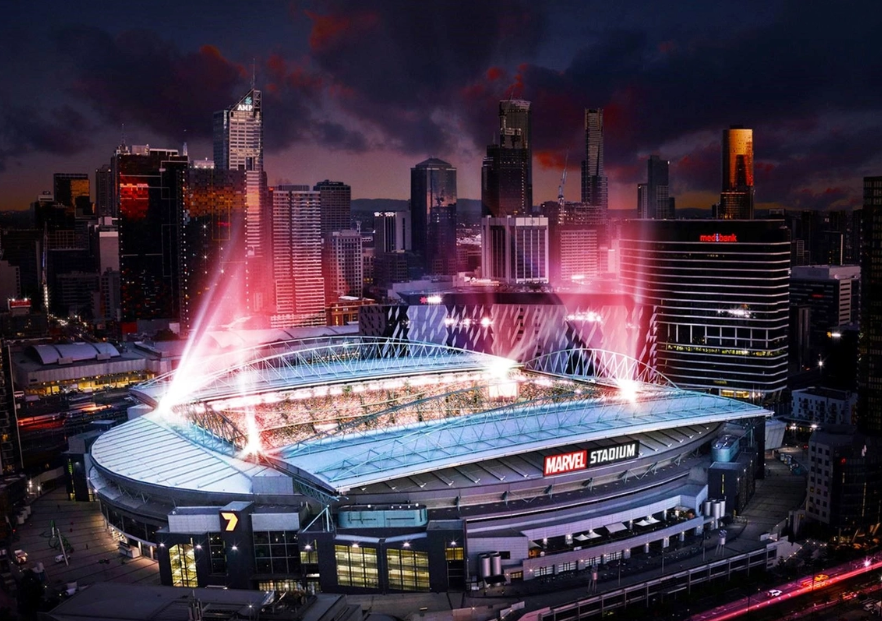
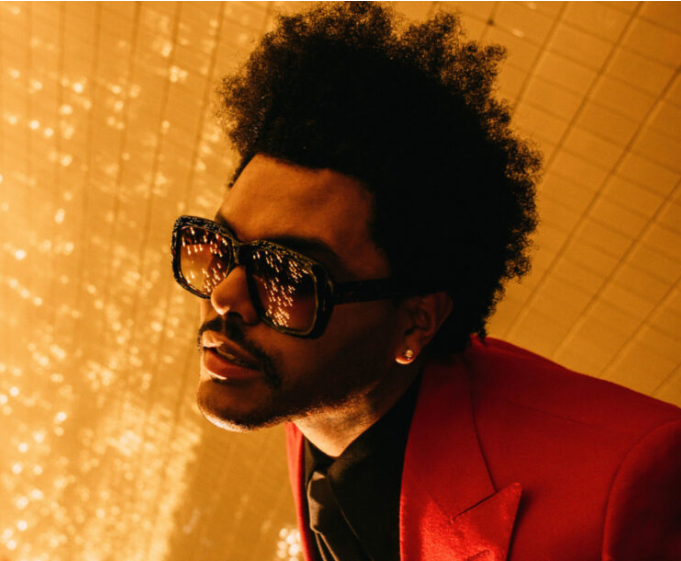

Venue

The Weeknd: After Hours Til Dawn
Sat, 5 Oct 2024, 7:00 pm
Marvel Stadium, Docklands, VIC
A $1+GST per sold ticket will be donated
to the XO Humanitarian Fund.
Concert info
- Take My Breath
- Sacrifice
- How Do I Make You Love Me?
- Can't Feel My Face
- Lost in the Fire
- Hurricane
- Starboy
- Reminder
- Die for You
- Save Your Tears
Average setlist for tour:
About artist

The Weeknd, born Abel Tesfaye, is a Canadian singer known for his distinctive voice and dark, moody music style. He gained global fame with hits like "Blinding Lights" and "Starboy," blending R&B, pop, and electronic influences. Over the years, The Weeknd has won numerous awards, including multiple Grammys, for his unique contributions to modern music.